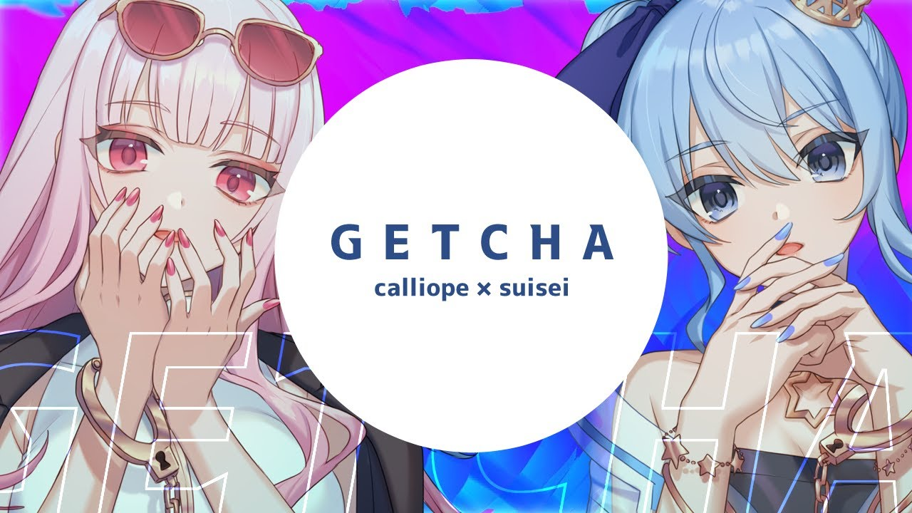
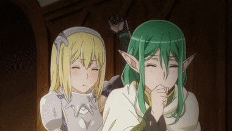
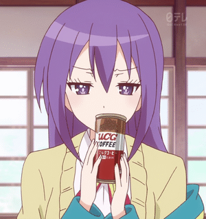
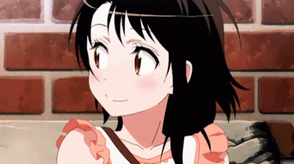

I am passionate in both art and gaming, I have a lot of experience in both animating and creating different kinds of artworks. Here are some examples of what I have created in the past:
In terms of content creators that inspires me, there has been two that always comes to mind. Mori Calliope and Suisei Hoshimachi from Hololive. Mori Calliope has been a big inspiration for me, her songs has been a big part of my life ever since she debuted. And Suisei's story of being an indie vtuber, and being accepted into a big company like Hololive, it left a big impression on me.
As I've been saying for quite a while now, Anime has always been a big part in my life. So here are some of the animes (and games) that I truly enjoyed throughout my life
   Back
Back